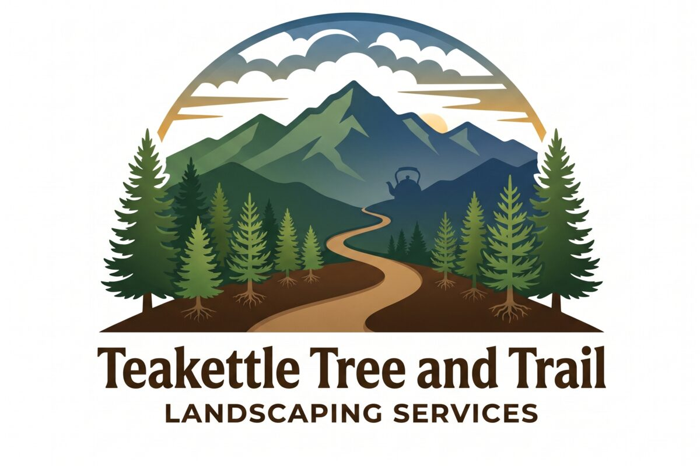
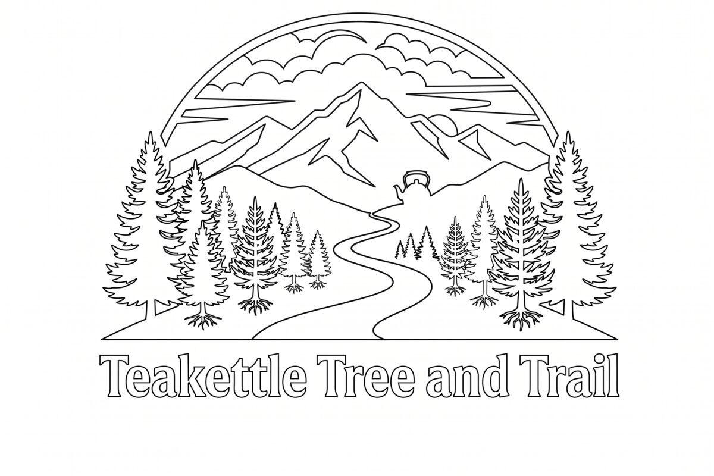

What We Do
Full-Spectrum Land & Landscape Services
From nursery-grown transplants to custom trail systems and timber hardscape — we handle it all with local expertise.

Property Restoration
Native species site assessment, erosion control, riparian buffers, wildlife habitat enhancement, and post-disturbance reforestation.
Learn More →
Local Transplants
Nursery-grown right on Teakettle Mountain. Regionally adapted conifers, fruit & nut trees, pollinators, and ornamentals.
Learn More →
Landscape & Hardscape
Custom landscape design, natural timber frame outdoor structures, stone and timber hardscaping, raised beds, and garden installs.
Learn More →